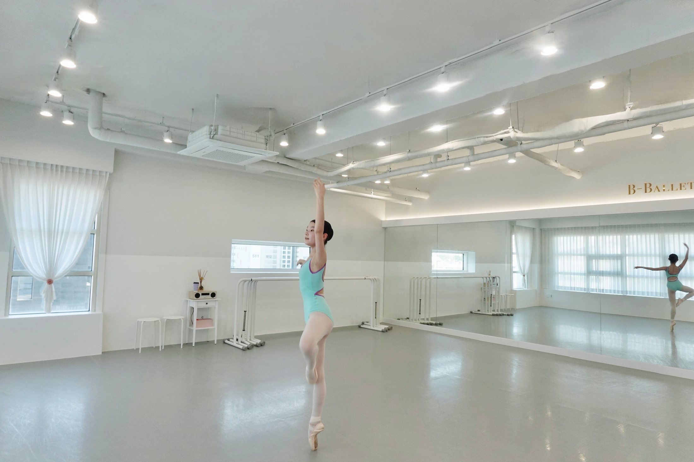
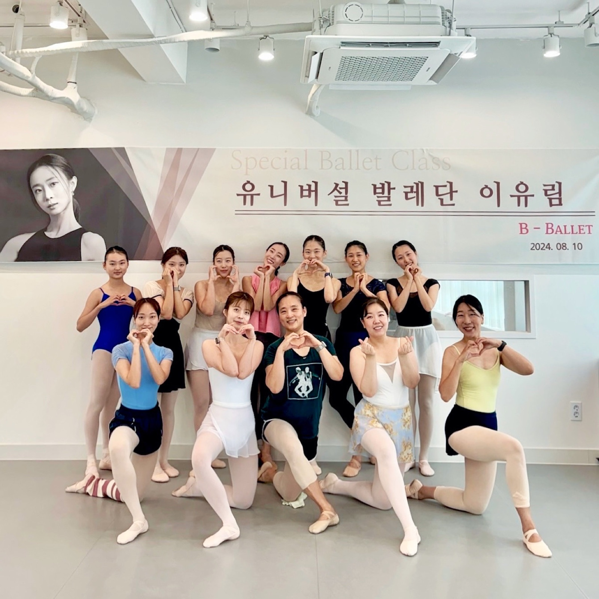

PROGRAMS
각자의 시작과 목표에 맞춘 발레 교육
프로그램을 선택하면 수업의 특징과 교육 방향을 자세히 볼 수 있습니다.
01유아 발레움직임을 즐기며 시작하는 첫 발레

놀이와 음악 속에서 자연스럽게
리듬과 기본 움직임을 경험하며 신체 감각, 집중력, 수업 예절을 함께 익힙니다.
02초등 발레바른 정렬과 집중력을 키우는 시간

튼튼한 기초와 자신감
연령과 경험에 맞는 단계별 훈련으로 자세, 유연성, 근력과 음악성을 고르게 발전시킵니다.
03전공 · 입시진로와 목표에 맞춘 전문 훈련

기초부터 레퍼토리까지 체계적으로
개인의 수준과 진로를 진단해 기본기, 테크닉, 작품, 무대 표현을 균형 있게 지도합니다.
04성인 발레처음부터 심화까지, 나에게 맞는 발레

일상 안에서 만나는 전문적인 수업
입문부터 고급까지 수준별 수업으로 정렬, 근력, 음악성과 표현력을 차근차근 익힙니다.
05토슈즈안전한 정렬과 힘을 바탕으로

준비된 몸으로 만나는 토슈즈
발과 발목의 힘, 중심 정렬, 올바른 슈즈 사용을 확인하며 안전하게 단계별로 진행합니다.
06작품반 · 공연반음악과 안무가 하나가 되는 경험

배운 움직임을 무대의 언어로
클래식 레퍼토리와 창작 작품을 배우며 군무, 표현, 무대 경험을 함께 쌓습니다.
07개인 레슨한 사람에게 집중하는 1:1 지도

목표와 몸의 조건에 맞춘 세밀한 수업
자세 교정, 테크닉 보완, 작품 준비 등 필요한 목표에 집중해 맞춤형으로 지도합니다.
08소그룹 레슨함께 배우되 섬세한 피드백까지

가까운 사람들과 만드는 집중도 높은 수업
비슷한 목표를 가진 소수 인원으로 구성해 그룹의 에너지와 개인 피드백을 모두 살립니다.
스페셜 클래스
무용수와 함께 나눈 특별한 수업
비발레에서 무용수들과 함께 새로운 움직임과 무대 경험을 나눈 특별 수업의 기록입니다.
이소정
이유림
조연재
